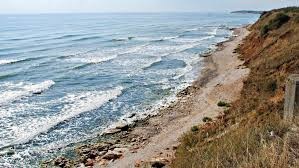
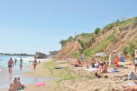
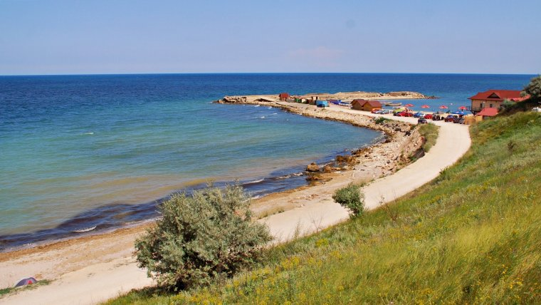

2 Mai este o localitate în partea de est a judeţului Constanţa. Este situată la 6 km de Vama Veche şi la 5 km de Mangalia.

Denumirea provine de la ziua de 2 mai 1864, când Alexandru Ioan Cuza a dizolvat adunarea legislativă a Principatelor Unite ale Moldovei şi ţării Româneşti pentru a-şi promova reformele. Numele i-a fost dat de Mihail Kogălniceanu, care a înfiinţat localitatea în 1887, după ce cu 9 ani mai înainte Dobrogea de Nord fusese anexată de România de la Imperiul Otoman prin tratatul de la Berlin.


Între localităţile 2 Mai şi Vama Veche, litoralul este teoretic ocrotit de o Rezervaţie naturală integrală (terestrăşi maritimă) dar practic, lipsa de fonduri şi de informare duce la o exploatare şi o poluare a acestei porţiuni a Litoralului românesc, care nu are nimic de invidiat zonelor mai urbanizate.